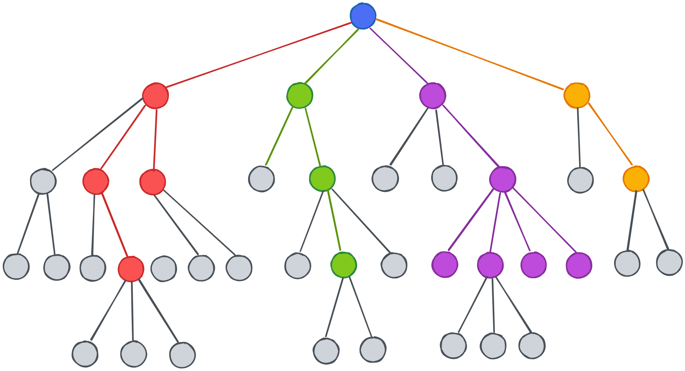

An enriching repository containing information about crimes in Buenos Aires, Argentina (2016 - 2021). Visualizations include statistics from different districts, category of crimes, time zones, and ratios of crimes. BuenosAiresCrimes.kaggle
Performed SQL data cleaning to maximize dataset usability for future insights.
Visualizations available on Tableau Public.

An informative dashboard containing visualizations about Covid-19's impact on the world, including global statistics, death counts per country and continent, percentaje of infected people, and global death ratios.
Imported raw data from Data.Nashville.gov into Microsoft SQL Server Managmenet Studio. Performed SQL data cleaning to maximize dataset usability for future insights. Visualizations available on Tableau Public.

Performed data cleaning for movies.csv on kaggle.com. Find and analyse which variables have the highest correlation coefficient to determine what leads to a high gross profit. Tools: Pandas Lib, NumPy, Seaborn, Matplotlib, and SAS.

Used public Weka dataset to perform machine learning algorithm in order to train the model to determine the likelihood of someone having diabetes based on the given instances. Utilized Supervised learning algorithm using J48 decision tree to visualize classification accuracy. Tools: Weka Explorer.